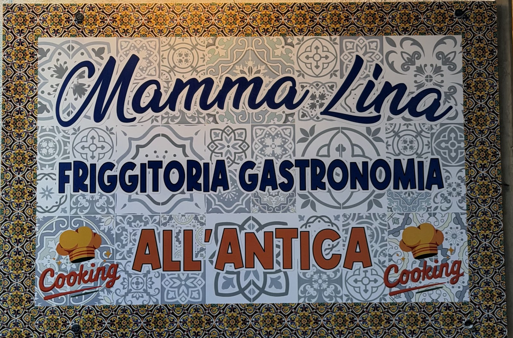
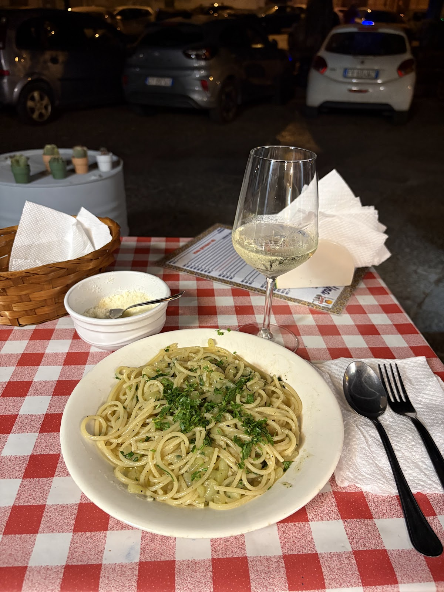
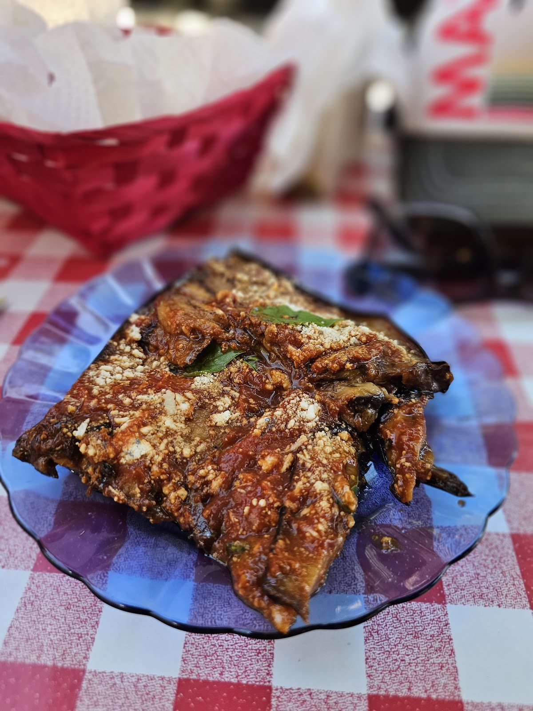

Friggitoria e gastronomia all'antica: la tovaglia a quadretti, l'arco giallo e la cucina di chef Rita — come una volta. Old-style fry shop & home kitchen, checked tablecloths included.
"All'antica" qui non è una posa: è la pasta del giorno scritta a mano, la parmigiana che esce quando è pronta, i fritti fatti nell'ordine in cui li chiedete. In cucina c'è Rita — i clienti la nominano per nome nelle recensioni.
"All'antica" is no pose here: today's pasta written by hand, parmigiana served when it's ready, and Rita in the kitchen — guests thank her by name in the reviews.
Dentro, l'arco giallo e le tovagliette a quadretti rossi. Fuori, i tavolini in strada come si usava.


Cambia col giorno e col mercato — servita fuori, coi tavolini in strada e il parmigiano nella ciotola.

Strati sottili, basilico e sugo di casa: il piatto che fa tornare i clienti.
"Best food we had in Palermo and even friendlier staff! Chef Rita's food is amazing!"
"Thank you for the excellent dinner — fresh, perfectly seasoned — and for the kind and welcoming attitude of the owners."
"Such a beautiful place!! Freshly cooked food and incredibly friendly people."
★ 4,9 / 5 — 80 recensioni su Google
| Lunedì – Domenica | 10:00 – 22:00 |
| La cucina | Orario continuato |
Via Venezia 40, 90133 Palermo — a due passi da Via Roma
Scrivete su WhatsApp per il tavolo o per sapere la pasta di oggi. WhatsApp us for a table — or to ask what today's pasta is.
💬 WhatsApp 📞 331 591 6964 Apri in Maps